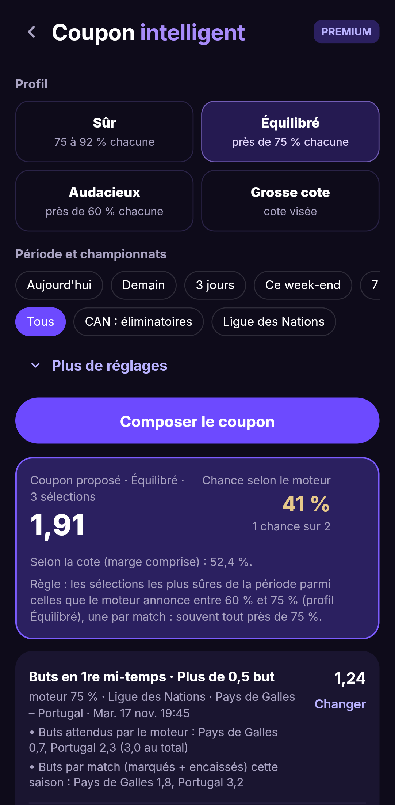
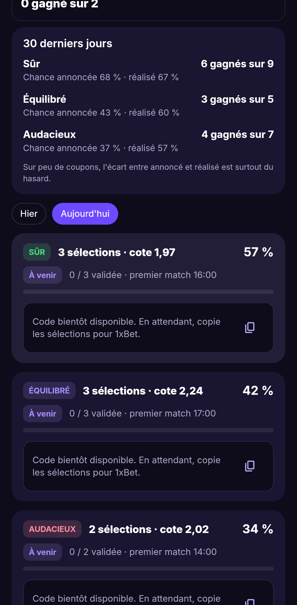
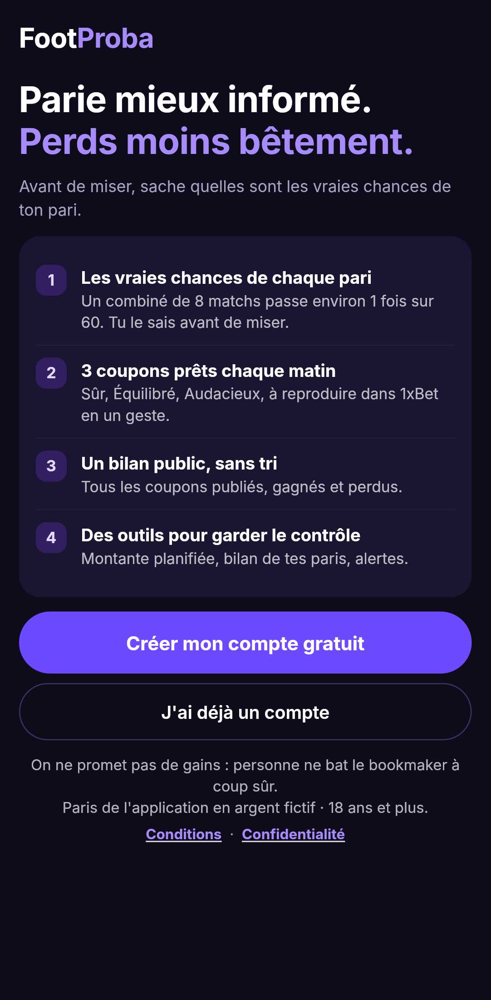
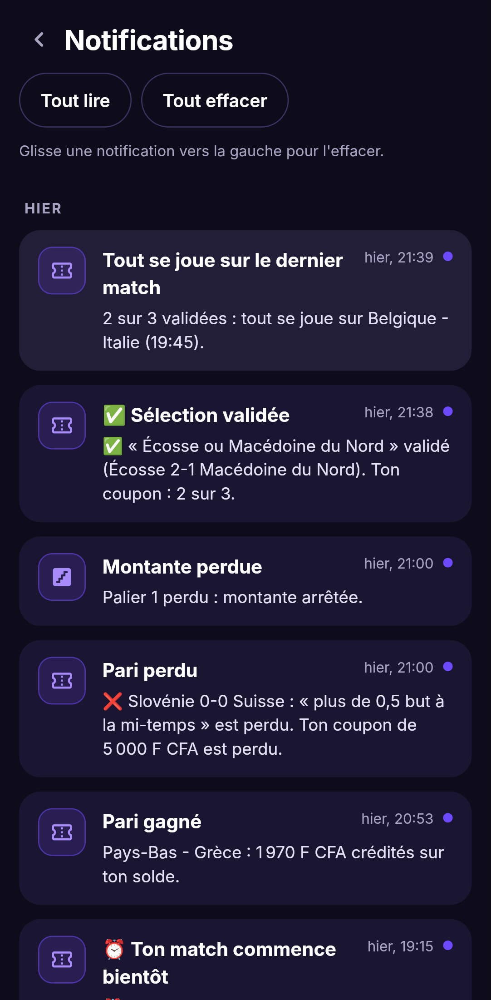

Quatre améliorations, une idée chacune. À gauche, l'application en ligne ce matin (capture réelle, compte de test Premium, argent fictif). À droite, la maquette. Les chiffres viennent des vrais coupons du 14/11, jamais arrangés.
Rien n'est codé : à valider par le fondateur. Les contours verts en pointillés montrent ce qui change.
Le joueur y gagne : il voit en une seconde qu'un coupon est « sous la cote » et peut le laisser de côté, sans avoir à comparer deux pourcentages.

Le joueur y gagne : il ne prend plus « Audacieux » pour « plus de gain » ou « plus sûr » par erreur ; chaque carte dit si le coupon vaut sa cote.

Le joueur y gagne : il reconnaît tout de suite l'application qu'il vient d'installer (même icône que sur son téléphone et dans la console).

Le joueur y gagne : il comprend chaque notification du premier coup (quel jour, quel pari) et en reçoit moins.
